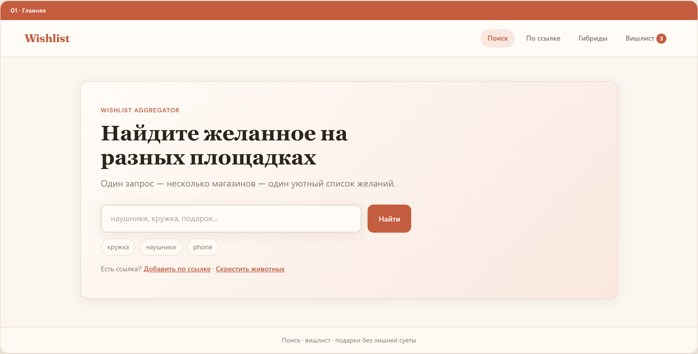
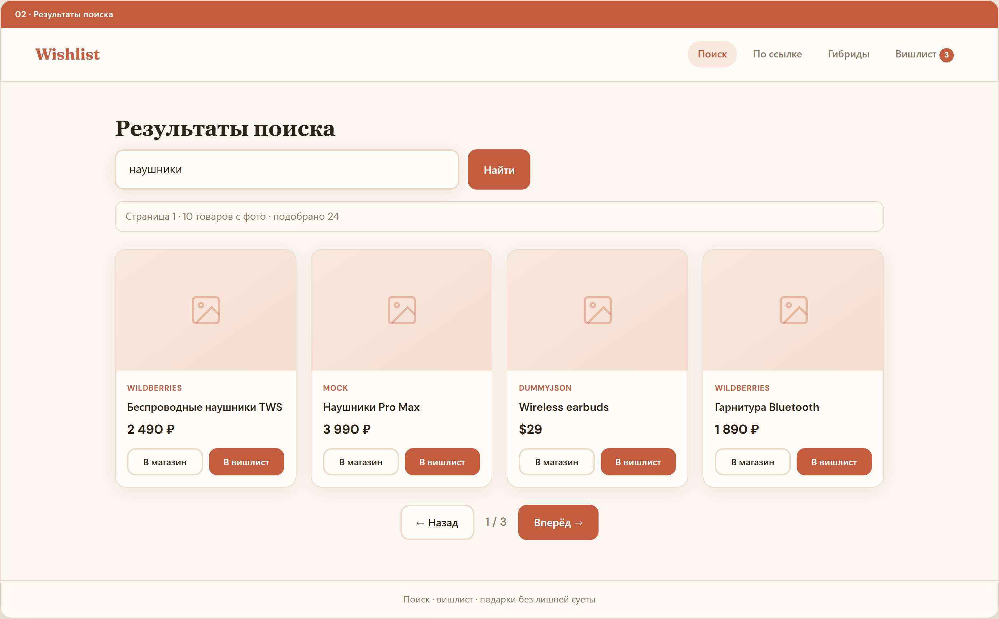
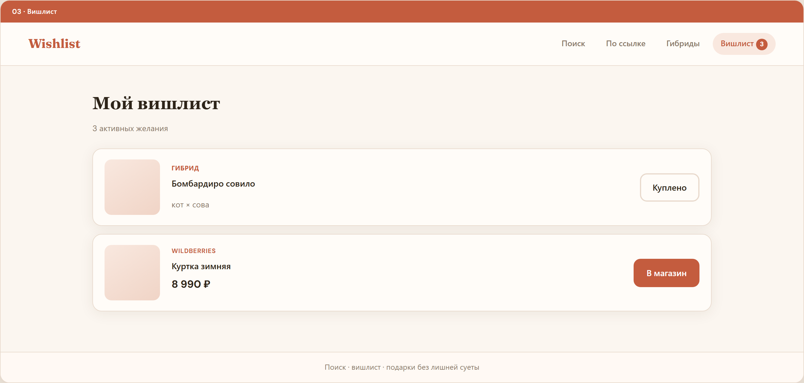
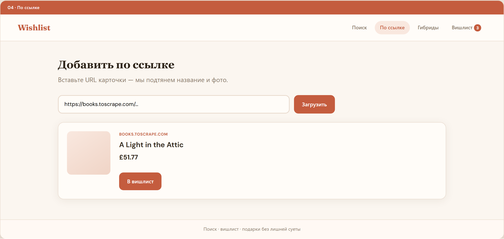
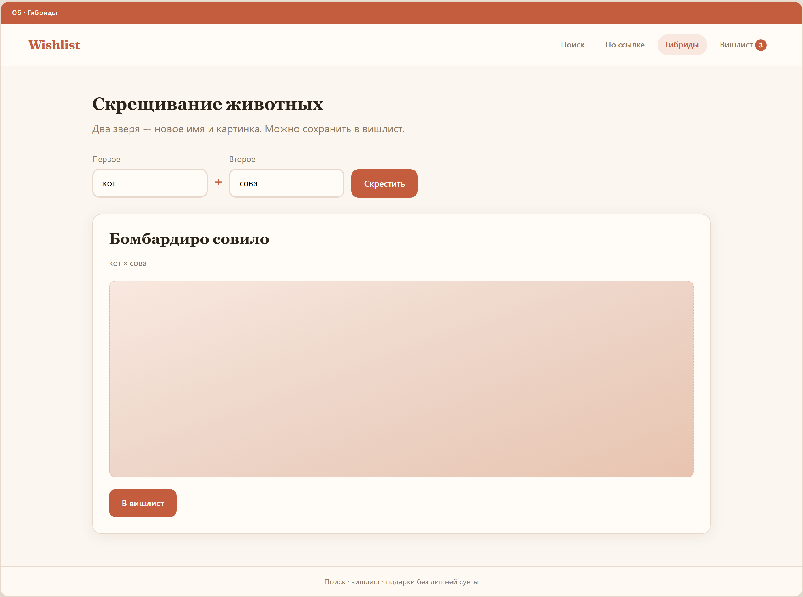
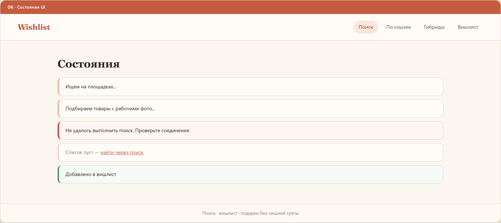

ai360 — пэт-проект: агрегатор вишлиста, BFF, вайбкодинг с Cursor
Пользователь ищет товар текстом или вставляет ссылку с маркетплейса, видит варианты с разных площадок в едином формате и сохраняет понравившееся в личный вишлист. Покупка — только по внешней ссылке. Бонус-фича: «гибриды животных» (генерация имени и картинки через AI).
npm run dev → Angular :4200 + BFF :4077| Слой | Технологии | Почему выбрали |
|---|---|---|
| Frontend | Angular 21, standalone, zoneless, signals, PrimeNG, SCSS | Целевой стек для обучения и публикации на GitHub. Signals + standalone — современный Angular без NgModule. PrimeNG даёт готовые карточки, кнопки, формы. Zoneless снижает лишние циклы CD. |
| BFF | Node.js 22, Express, TypeScript, cheerio, Playwright | Фронтендеру знаком TypeScript и npm. BFF прячет ключи API, CORS, SSRF-валидацию и парсинг. Playwright — единственный реалистичный путь к карточкам WB/Ozon/Allegro без публичного API. |
| Монорепо | npm workspaces, concurrently | Один npm run dev из корня вместо двух терминалов. Общий lockfile и overrides для Angular — защита от дублей @angular/core (NG0203). |
| CI/CD | GitHub Actions, GitHub Pages, Render Blueprint | Бесплатно для пэт-проекта: статика на Pages, BFF на Render free tier. CI на каждый push — сборка + 25 unit-тестов. |
| AI (runtime) | Stable Horde, OpenAI DALL·E 2 (опц.) | Гибриды животных без своего GPU. Horde — бесплатная очередь; DALL·E — fallback при наличии ключа на Render. |
| AI (разработка) | Cursor Agent, MCP-серверы | Агент пишет код по rules, проверяет BFF через MCP, открывает UI в browser MCP. Не заменяет runtime — ускоряет разработку. |
| Тесты | Vitest (Angular 21), Playwright (PDF) | Встроенный test runner Angular 21. 10 spec-файлов: сервисы, utils, компоненты. |
| Папка | Назначение |
|---|---|
features/<name>/pages/ | Экраны с маршрутом (HomePage, SearchResultsPage…) |
features/<name>/components/ | UI внутри фичи (FusionFormComponent) |
shared/components/ | Переиспользуемые блоки: ProductCard, SearchForm |
core/services/ | WishlistService, SearchApiService — singleton |
core/utils/ | apiUrl, offer-image, http-error-message |
GET /api/search?q= → параллельные адаптеры → сортировка по цене → карточки 3×3POST /api/offers/from-url → Playwright или cheerio → предпросмотр → вишлистPOST /api/animal-fusion → имя + генерация 384px → кэш на диске BFFGET /api/wb-image/:nmId — прокси редиректов CDN WildberriesBFF — единая точка входа для Angular. Фронт никогда не хранит API-ключи и не ходит напрямую на маркетплейсы (CORS, антибот).
| Метод | Путь | Назначение |
|---|---|---|
| GET | /api/health | Health check для Render и MCP |
| GET | /api/search?q=&wbPage= | Поиск: mock + WB + DummyJSON параллельно |
| POST | /api/offers/from-url | Импорт карточки по URL (SSRF-safe) |
| POST | /api/animal-fusion | Гибрид: имя + картинка (Horde/DALL·E) |
| GET | /api/wb-image/:nmId | Прокси изображений Wildberries |
| id | Источник | Особенности |
|---|---|---|
| mock | Локальный каталог | Стабильный демо-набор, всегда работает |
| wildberries | search.wb.ru | Реальные товары; пагинация через wbPage |
| dummyjson | dummyjson.com | Демо REST API без ключей, англ. каталог |
Адаптеры реализуют SearchAdapter; search.service.ts вызывает их через Promise.allSettled с таймаутом — падение одного источника не ломает ответ.
| Локально | Render free | |
|---|---|---|
| Порт | 4077 (proxy → /api) | ai360.onrender.com |
| Playwright | ✅ после playwright:install | ⚠️ нестабильно на free tier |
| Cold start | — | 30–60 с после сна |
| CORS | localhost:4200 | natallinya.github.io |
Два независимых контура: CI проверяет код, CD выкладывает web на Pages и api на Render.
.github/workflows/ci.yml)Триггер: push и PR в main / development.
npm ci — установка workspaces (api, web, mcp)@rollup/rollup-linux-x64-gnu (lockfile с Windows)npm run build -w api — компиляция TypeScript BFFnpm run build -w web — production-сборка Angularnpm run test -w web -- --watch=false — 25 unit-тестов Vitest.github/workflows/deploy.yml)Триггер: push в main / development. Concurrency: один деплой Pages.
scripts/write-web-env.mjs — подстановка API_BASE_URL (дефолт Render)ng build --configuration=github-pages — base href /ai360/prepare-github-pages.mjs — артефакт для Pagesdeploy-pages@v4 → natallinya.github.io/ai360render.yaml)development, регион Frankfurt, plan freenpm ci && npm run build -w apinpm run start -w api/api/healthOPENAI_API_KEY, STABLE_HORDE_API_KEYРазработка в development; релизы — merge в main. Dependabot следит за зависимостями. Рекомендуется branch protection + required check CI.
Дизайн-система: тёплая палитра (#c45c3e, #f9e8df), Fraunces + DM Sans, скруглённые карточки. Исходники: docs/design-v2-warm.html, docs/wireframes-v2.html.






proxy.conf.json с timeout 180s для fusionЧтобы агент не «плыл» по структуре и не коммитил без спроса — правила в репозитории и кастомные MCP.
.cursor/rules/)| Файл | Когда | Содержание |
|---|---|---|
angular-standards.mdc |
globs: web/src/** | Структура features/pages/components, именование *.page.ts / *.component.ts, standalone, OnPush, signals, @if/@for, Vitest |
angular-git-workflow.mdc |
alwaysApply | Ветка development, не коммитить/push без запроса, стиль сообщений feat:/fix: |
custom-rules.mdc |
alwaysApply | Пользовательские правила из чата: не пушить без спроса, проверять консоль браузера, не добавлять комментарии |
Краткий README для агента: продукт, команды из корня, MVP scope, что не делать (скрапинг без API, ключи во фронте).
| Сервер | Где | Зачем в ai360 |
|---|---|---|
| angular-cli | .cursor/mcp.json | Актуальный Angular 21 API, ng generate, миграции |
| github | .cursor/mcp.json | Issues, PR, CI checks (токен в env) |
| ai360-bff | mcp/ai360-bff/ | Tools: bff_health, bff_search, bff_fuse_animals, bff_wb_image — агент тестирует BFF из чата |
| ai360-rules | mcp/ai360-rules/ | Tools: rule_install, rule_list, rule_read — «Установи правило …» → custom-rules.mdc |
| cursor-ide-browser | Встроен в Cursor | Открыть localhost, snapshot UI, проверка после правок |
Сборка MCP: npm run build:mcp. Прод-BFF для MCP: .cursor/mcp.prod.example.json (AI360_BFF_URL=Render).
Отдельный skill-файл в репозитории не заведён; вместо этого — angular-standards.mdc + макеты design-v2-warm.html. При работе с layout агент следует warm UI: flex-карточки, 3-колоночная сетка, footer кнопок внизу карточки.
Хронология вайбкодинга: от идеи до деплоя и тестов. Подробнее: docs/TALK_CURSOR_VIBE_CODING.md.
Этап 0 · Старт
Пэт-проект под Angular 21 + GitHub. Нужна понятная продуктовая история с фронтом и бэкендом, но без «магических» API маркетплейсов.
Этап 1 · Продукт (BA)
PRODUCT_SPEC_wishlist_aggregator.md — персоны, MVP, риски API. USER_STORIES.md — 35 stories с чеклистом. Wireframes v2.
Этап 2 · Scaffold
Angular 21 (standalone, zoneless), Git, GitHub Natallinya/ai360, первый CI workflow, ветка development.
Этап 3 · MVP UI
Главная, поиск, вишлист на mock + localStorage. Карточки товаров, навигация.
Этап 4 · Rules
angular-standards.mdc, git workflow, AGENTS.md, позже MCP ai360-rules для правил из чата.
Этап 5 · BFF
Адаптеры mock + DummyJSON, GET /api/search, CORS, proxy в ng serve. Исследование eBay/Allegro → честный отказ.
Этап 6 · Интеграции
Wildberries search, импорт по URL (cheerio + Playwright), MARKETPLACE_INTEGRATIONS.md.
Этап 7 · Монорепо
npm workspaces, concurrently, overrides Angular, .npmrc hoisted.
Этап 8 · Дизайн v2 + фичи
GitHub Pages + Render, гибриды животных (Stable Horde 384px), фиксы NG0203/PrimeTemplate, сетка 9×3.
Этап 9 · Качество
25 Vitest-тестов, этот PDF, MCP ai360-bff для отладки из IDE.
Этап 10 · Дальше
Фильтр площадки в UI, заметки вишлиста, auth + облачный вишлист, публичная ссылка /w/:id.
| Маршрут | Функция | Статус |
|---|---|---|
| / | Главная, быстрый поиск, чипы | готово |
| /search | 9×3, пагинация, фильтр битых фото | готово |
| /wishlist | CRUD, «куплено», prune | готово |
| /add-by-url | Импорт, Playwright, предпросмотр | готово |
| /fusion | Гибриды, AI 384px, вишлист | готово |
| Epic | Готово | Осталось |
|---|---|---|
| A — Поиск | 7/9 | Фильтр площадки, streaming |
| B — Вишлист | 6/7 | Заметки |
| C — Аккаунт | 1/3 | Auth, миграция localStorage |
| D — Расширения | 1/5 | Публичный вишлист, цены |
| E — По ссылке | 5/6 | Ручная цена |
| F — Гибриды | 6/6 | — |
| G — Навигация | 3/3 | — |
10 spec-файлов, 25 тестов: WishlistService, SearchApiService, ProductCard, SearchForm, FusionForm, api-url, offer-image, http-error, source-label, app shell. Фикстура: testing/product-offer.fixture.ts.
npm test -w web -- --watch=false
За несколько сессий вайбкодинга: продуктовая спека, Angular 21, Express BFF, 5 экранов, деплой, MCP, 26/35 stories. Роль разработчика смещается к архитектуре и ревью; агент закрывает scaffold, интеграции и документацию — под контролем rules.